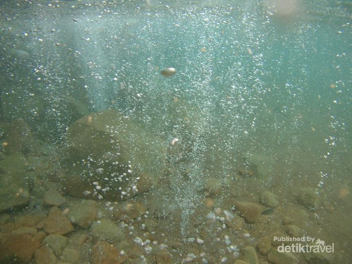

Pemandian air panas dan air belerang mungkin sudah sering didengar. Namun, gimana dengan berendam di pemandian sumber air soda.
Bagaimana rasanya? Ada sebuah Pemandian Air Soda yang merupakan salah satu tempat wisata unik yang mewakili Indonesia di daftar global.
Bagaimana tidak, pemandian air soda ini kabarnya hanya ada dua di dunia, yaitu di Indonesia dan Venezuela.
Di Sumatera Utara, tepatnya di Desa Parbubu, Kecamatan Tarutung, Tapanuli Utara, terdapat sebuah mata air yang langka.
Airnya memiliki rasa yang mirip dengan air soda atau air berkarbonasi.
Oleh warga setempat, mata air ini dikenal dengan nama Pemandian Air Soda Tarutung atau Aek Rara.
Air dari pemandian ini mengeluarkan gelembung gelembung kecil seperti soda, tubuh kita akan serasa berbusa jika kita sedang berendam dalam kolam air soda tersebut namun unik nya air tersebut tidak lengket di kulit.
Dan jika ingin berendam untuk waktu yang cukup lama sebaiknya menggunakan kaca mata renang karena akan sedikit perih jika terkena mata.
Pemandian Air Soda ini cukup dalam sekitar 1,7 meter, tapi jangan khawatir bagi anda yang tidak bisa berenang karena telah disediakan pelampung, dan anda bisa untuk menyewanya.
Serta yang tidak kalah menarik, biaya masuk untuk ke pemandian ini GRATIS, pengunjung hanya diwajibkan untuk membeli minuman atau makanan di warung sang pemilik.
Cara akses untuk ketempat ini juga sangat gampang, Jika anda berasal dari luar kota Sumatera Utara anda dapat memilih penerbangan dari Kota asal ke bandara Silangit Siborong-borong Tapanuli Utara.
Waktu tempuh dari bandara Silangit ke Pemandian Air Soda hanya butuh waktu sekitar 50-60 menit. Namun, jika jadwal penerbangan pesawat ke Silangit tidak tersedia,
anda bisa juga memilih ke bandara Ferdinand Lumban Tobing di Sibolga Tapanuli Tengah, dan butuh waktu 2,5 jam dari bandara tersebut untuk sampai ke Pemandian Air Soda ini.
Berikut beberapa hal unik, yang berkaitan dengan air soda:
1. Sejarah Penemuan
Awalnya, sumber mata air ini ditemukan oleh seorang bidan bernama Minar Sihite yang sedang berjalan sendirian menembus hutan yang terkenal cukup angker.
Tanpa sengaja, dia menemukan sumber air dengan aroma dan rasa yang mirip soda. Tak hanya itu, warna mata airnya pun kemerahan. Itulah sebab pemandian ini juga dikenal sebagai Aek Rara.
Dalam bahasa Batak, “Aek” memiliki arti air, sedangkan “Rara” artinya adalah merah. Setelah menemukan sumber air soda,
Minar bermimpi bertemu sesosok arwah yang memberi wasiat untuk mengembangkan tempat tersebut dengan beberapa syarat. Beberapa di antaranya adalah tidak boleh berbicara kotor,
tidak boleh telanjang meskipun anak kecil, juga tidak boleh membangun penginapan di tempat tersebut.
Setelah membuat “perjanjian” melalui mimpinya tadi, Minar pun memutuskan untuk membuat kolam berukuran cukup besar di lokasi itu sehingga siapa saja bisa menikmati sensasi berendam dan berenang di kolam air soda.
Pemandian Air Soda Tarutung mulai dibuka untuk umum sejak tahun 1976 . Meski banyak tantangan serta larangan dari pemerintah setempat mau pun dari masyarakat sekitar yang mengklaim itu adalah milik dari pemerintah serta milik warisan dari marga-marga,
ibu Minar boru Sihite tetap mempertahankan serta mengembangkan tempat ini menjadi objek wisata yang terkenal dari Tapanuli Utara sampai saat ini.
2. Merupakan warisan unik dunia yang hanya ada 2 di dunia

Salah satu fakta yang wajib kamu ketahui mengenai Air Soda adalah hanya terdapat di dua negara di dunia, yaitu di Indonesia dan Venezuela.
Namun, sumber Air Soda di Venezuela saat ini sudah tidak dimanfaatkan lagi sebagai pemandian umum.
Oleh karena itu, Air Soda Tarutung merupakan destinasi wajib bagi kamu yang penasaran dan menjadi satu-satunya air soda di dunia yang bebas untuk dikunjungi dan bebas biaya masuk.
3. Lokasi yang berada di tengah sawah dan bukit
Pengunjung yang berendam di air soda ini bisa menikmati hangatnya sumber mata air di kolam, sembari menikmati suasana asri yang ada di sekeliling pemandian.
Suasana yang ditawarkan sangat sejuk dan menyegarkan mata karena berada di area persawahan, dibarengi dengan pemandangan Lembah Silindung dan jajaran Bukit Barisan.
Kuliner dan Makanan Khas Tarutung
1. Ikan Tombur
Ikan Tombur
Memiliki nama lain Natinombur, kuliner yang satu ini sebenarnya merupakan ikan bakar.
Hanya saja yang memberikan rasa yang berbeda dengan ikan bakar pada umumnya adalah karena bumbu pada ikan ini merupakan bumbu khas Tapanuli.
Keunikan dari kuliner khas di Tarutung ini adalah penggunaan andaliman.
Ada beberapa jenis ikan air tawar yang biasanya dijadikan sebagai menu ikan tombur,
misalnya ikan nila, ikan mas, mujahir, lele, dan lain-lain. Untuk cara memasaknya yaitu ikan dibakar terlebih dahulu.
Ketika dirasa sudah matang, baru dilumuri bumbu khas tombur.
2. Dekke Naniura
Dekke Naniura
Meskipun sama-sama memakai ikan sebagai bahan utama, namun Dekke Naniura memiliki nilai keunikan tersendiri diabndingkan hidangan lainnya.
Dahulu kuliner ini hanya disajikan untuk raja-raja Batak maupun disuguhkan hanya ketika ada upacara adat.
Namun sekarang, kamu bisa menemukan kuliner yang satu ini di berbagai tempat makan terkenal di Tarutung.
Selain itu, yang menjadikan Dekke Naniura semakin spesial adalah cara memasaknya. Bahannya tidak dibakar melainkan disajikan dalam kondisi masih mentah.
Sebelum menyajikan dekke naniura, ikan akan terlebih dahulu direndam di perasan jeruk limau dan larutan asam.
Masyarakat percaya bahwa melalui cara inilah bakteri yang membahayakan kesehatan akan mati. Cara ini juga mampu menghilangkan bau amis pada ikan.
Setelah itu, ikan akan langsung dilumuri bumbu halus dengan rasa sangat lezat.
3. Babi Panggang
Babi Panggang
BPK merupakan singkatan dari Babi Panggang Kuno yang tentunya kamu sudah tahu bahwa makanan ini menggunakan daging babi sebagai bahan utama.
Namun tidak sembarang daging babi yang bisa dijadikan sebagai BPK.
Daging babi yang diperoleh harus dari babi yang tidak terlalu tua.
Untuk penyajiannya yaitu daging dibumbui kecap serta bumbu khas dari masyarakat Tarutung.
Setelah itu, daging yang sudah dilumuri bumbu tersebut dibakar.
BPK biasa disajikan dengan sambal hijau atau daun singkong tumbuk yang akan memberikan rasa begitu nikmat.
4. Kopi Lintong
Kopi Lintong
Kopi Lintong menjadi kuliner dan minuman khas di Tarutung yang juga harus anda coba.
Jika pada umumnya kuliner merupakan sebuah makanan, namun kali ini kamu harus mencicipi minuman khas yang memiliki rasa tiada duanya.
Untuk menemukan kopi ini tidak sulit karena terdapat di hampir kedai kopi yang terletak di Tarutung, Tapanuli Utara.
5. Dali Ni Horbo
Dali Ni Horbo
Makanan khas Tarutung yang ketiga adalah Dali Ni Horbo.
Untuk cara memasaknya sebenarnya sama yakni dengan menggunakan bumbu arsik yang ditambahkan ikan.
Namun perbedaannya yakni dali ni horbo tidak menjadikan ikan sebagai bahan utama.
Bahannya berasal dari susu kerbau yang sebelumnya dipadatkan.
Tidak sedikit masyarakat di Tarutung menamai hidangan ini sebagai kejunya orang Batak.
Hal ini karena proses pemadatan susu kerbau tersebut hampir sama ketika kamu hendak membuat keju.
Rekomendasi Penginapan
RedDoorz @HaraitoTarutung
RedDoorz @HaraitoTarutung terletak di Jl. Dr.Sutomo, Hutatoruan X, Tarutung, Kab. Tapanuli Utara, Sumatera Utara. RedDoorz @HaraitoTarutung
berjarak sekitar 1,2 km dari Pasar Tarutung Readmore...
Hotel Grand Kenari
Hotel Grand Kenari beralamat di Jl. Mayjend. Di Panjaitan, Hutatoruan VI, Tarutung, Kabupaten Tapanuli Utara, Sumatera Utara, 22411.
Hotel ini dekat dengan wisata Aek Situmandi. Readmore...
Hotel Hineni
Berada Jalan Raja Johannes No. 7A, Partali Toruan, Hutatoruan X, Tarutung, Tapanuli Utara, Sumatera Utara.
Dibangun sejak tahun 2005 silam, Hotel Hineni dikatakan sebagai penginapan yang bersih dan nyaman, cocok bagi Anda yang akan berlibur atau mengadakan kunjungan bisnis.
Readmore...
SPOT ON 2220 Pink’s Guest House
Penginapan ini dapat Anda temukan di Jalan Dr. Sutomo, Hutatoruan VI, Tarutung, Kabupaten Tapanuli Utara, Sumatera Utara.
SPOT ON 2220 Pink’s Guest House dikatakan sebagai perpaduan sempurna antara kenyamanan dan ketenteraman.
Readmore...
OYO 1520 Hotel Kartini
Penginapan ini beralamat di Jalan Jct. Simorangkir No. 24, Salib Kasih, Tarutung, Tapanuli Utara, Sumatera Utara.
Berbeda dengan kebanyakan hotel lain yang berada di bawah jaringan OYO, harga sewa OYO 1520 Hotel Kartini bisa dikatakan berada di level medium.
Readmore...
Bali Hotel
Akomodasi ini tidak berada di Pulau Dewata melainkan di Jl. Balige No. 1, Hutagodang, Tarutung, Tapanuli Utara, Sumatera Utara.
Hotel & Restaurant Bali dapat Anda jangkau setelah menempuh perjalanan sejauh 26,03 km dari Bandar Udara Silangit.
Readmore...
RedDoorz @HaraitoTarutung
Terletak di Jl. Dr.Sutomo, Hutatoruan X, Tarutung, Kab. Tapanuli Utara, Sumatera Utara. RedDoorz @HaraitoTarutung berjarak sekitar 1,2 km dari Pasar Tarutung, 350 meter menuju Sopo Partungkoan, 5,3 km menuju Kapal Travel Cabin, 4,4 km menuju Monumen Si Raja Panggabean, serta 2,7 km saja untuk menuju Air Soda Parbubu.
Diklaim sebagai pilihan menginap yang ideal untuk liburan keluarga, solo traveler, dan pelancong bisnis. Fasilitas yang tersedia di RedDoorz @HaraitoTarutung antara lain: meja, pemanas air atau water heater, kamar bebas asap rokok, layanan kamar selama 24 jam, area parkir kendaraan, ruangan khusus merokok, restoran, layanan penyimpanan bagasi, dan layanan meja depan selam 24 jam.
Ada tipe kamar yang sudah disiapkan di penginapan ini, yakni Double Room dan Twin Room. Tarif kedua tipe kamar tersebut identik, yakni berkisar Rp 138 ribuan per malam. Namun, jika sedang ada promo, tamu bisa mendapatkan harga yang jauh lebih murah, cuma Rp 83 ribuan per malam. Untuk pemesanan, dapat mengunjungi situs RedDoorz atau melalui beberapa situs booking online.
Hotel Grand Kenari beralamat di Jl. Mayjend. Di Panjaitan, Hutatoruan VI, Tarutung, Kabupaten Tapanuli Utara, Sumatera Utara, 22411.
Hotel ini dekat dengan wisata Aek Situmandi. Hotel ini juga lumayan bersih dan memiliki fasilitas yang sudah cukup memadai, serta wifi gratis yang di tujukan kepada pengunjung.
Hotel ini memiliki tarif mulai dari harga Rp 284.000 – 340.000 per malam.
Berada Jalan Raja Johannes No. 7A, Partali Toruan, Hutatoruan X, Tarutung, Tapanuli Utara, Sumatera Utara. Dibangun sejak tahun 2005 silam,
Hotel Hineni dikatakan sebagai penginapan yang bersih dan nyaman, cocok bagi Anda yang akan berlibur atau mengadakan kunjungan bisnis.
Lokasinya juga diklaim strategis sehingga mudah untuk diakses, dan harga yang terjangkau bisa menjadi pilihan akomodasi perjalanan Anda.
Tarif Hotel Hineni:
Tipe Kamar
Tarif per Malam
Standard Room
Rp 399.300
Deluxe Room Breakfast
Rp 525.140
Executive Room Breakfast
Rp 565.070
Family Room
Rp 598.950
Suite Room Breakfast
Rp 629.200
Bungalow
Rp 2.178.000
Untuk memperoleh informasi lebih lengkap, Anda bisa menghubungi pihak hotel melalui nomor telepon (0633) 20552.
Locationx
SPOT ON 2220 Pink’s Guest House
Penginapan ini dapat Anda temukan di Jalan Dr. Sutomo, Hutatoruan VI, Tarutung, Kabupaten Tapanuli Utara, Sumatera Utara.
SPOT ON 2220 Pink’s Guest House dikatakan sebagai perpaduan sempurna antara kenyamanan dan ketenteraman.
Pasalnya, properti modern ini sudah dilengkapi dengan interior standar serta kebutuhan kontemporer untuk masa menginap Anda, termasuk fasilitas CCTV camera, akses Wi-Fi 24 jam, televisi, kipas angin, hingga kamar mandi.
Setidaknya, ada dua tipe kamar yang ditawarkan, yakni Standard Double Room dan Deluxe Double Room.
Menurut situs resmi OYO sebagai pengelola, kamar tipe pertama disewakan dengan tarif Rp 195 ribuan per malam, sedangkan biaya sewa Deluxe Double Room mulai Rp 229 ribuan per malam.
Jika Anda tertarik singgah, bisa melakukan reservasi via situs resmi OYO atau beberapa online travel agent.
Penginapan ini beralamat di Jalan Jct. Simorangkir No. 24, Salib Kasih, Tarutung, Tapanuli Utara, Sumatera Utara.
Berbeda dengan kebanyakan hotel lain yang berada di bawah jaringan OYO, harga sewa OYO 1520 Hotel Kartini bisa dikatakan berada di level medium.
Menyediakan dua tipe kamar, tarif Deluxe Double Room berkisar Rp 277 ribuan per malam, sedangkan biaya sewa Deluxe Twin Room sekitar Rp 288 ribuan per malam.
Bahkan, jika Anda memesan via situs booking online, harga bisa mencapai Rp 400 ribuan per malam.
Dengan tarif tersebut, pengunjung akan mendapatkan sejumlah fasilitas yang memadai, cenderung mewah.
Di setiap kamar, sudah disediakan ranjang tipe double atau twin bed, AC, akses Wi-Fi gratis, mesin pembuat teh atau kopi, kulkas mini, pengering rambut, televisi, kamar mandi pribadi, hingga layanan tata graha harian.
Apabila tertarik mampir, reservasi dapat dilakukan via situs resmi OYO atau nomor ponsel 0804 104 0040.
Akomodasi ini tidak berada di Pulau Dewata melainkan di Jl. Balige No. 1, Hutagodang, Tarutung, Tapanuli Utara, Sumatera Utara.
Hotel & Restaurant Bali dapat Anda jangkau setelah menempuh perjalanan sejauh 26,03 km dari Bandar Udara Silangit.
Hotel & Restaurant Bali dikatakan sebagai penginapan yang cukup direkomendasikan karena berada di tengah kota, dengan suasana yang nyaman, serta fasilitas yang cukup komplet.
Dekat dengan pasar pagi dan ikon Kota Tarutung, properti ini menawarkan sarapan gratis, double bed, meja kerja, cermin rias, televisi, pendingin ruangan, dan kamar mandi pribadi.
Untuk bisa bermalam di tempat ini, salah satu situs booking online menawarkan harga Rp460 ribuan per malam,
sedangkan situs perjalanan lainnya mematok tarif Rp 570 ribuan per malam untuk kamar tipe Deluxe. Apabila Anda berminat menginap di tempat ini, pemesanan dapat dilakukan melalui online travel agent, nomor telepon (0633) 21285, atau datang langsung ke lokasi.